The training
Map of Monotropic Experiences: Reframing Autism Through A Neurodiversity-Affirming Lens.
Free training for professionals, families and community groups to support Autistic people. Created by Helen Edgar (Autistic Realms) with Ryan Boren, Norah Hobbs and Chelsea Adams (Stimpunks) — by and for Autistic people.
The whole training is on this page, presenter notes and all. It runs to about 4,000 words, or roughly forty-five minutes of presentation. Delivered live with room for discussion it usually takes one to two hours, and it expands into a full day if you want it to.
We welcome you to adapt this training to meet the needs of your community group and the people you support. You can focus on whichever areas matter most to your group; we have deliberately left it open.
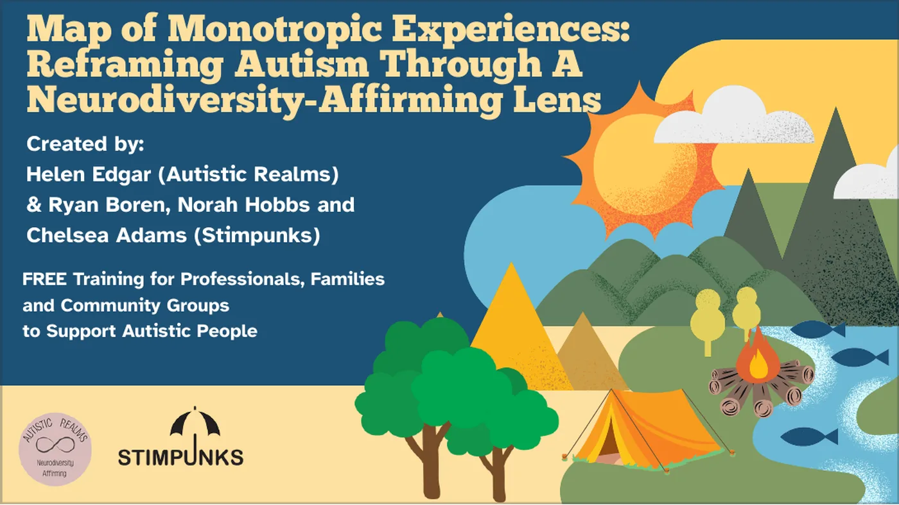
Welcome
At Autistic Realms and Stimpunks, we believe in sharing our own stories and validating each other's experiences.
The Map of Monotropic Experiences was created by and for Autistic people. The original map was created by Helen Edgar as a reflection of her own monotropic bodymind experiences. We have developed this further as a team, and are offering a space for everyone to reflect on their authentic identity as Autistic and ADHD people — to explore that identity and find out how embracing the theory of monotropism may help build a stronger understanding of self and support wellbeing.
Our training helps to reframe how we understand ourselves: not through the deficit-focused lens of traditional autism research done on Autistic people, but through lived experience and Autistic voices, by Autistic people.
This free training offers a radical, affirming reframe of Autism, grounded in the theory of monotropism — a way of understanding the deep, focused attention patterns common among Autistic and ADHD people.
Rather than seeing Autistic traits as deficits, monotropism recognises our "interest-based nervous system" as a natural and meaningful way of engaging with the world.
At the heart of our work is the importance of embracing authentic Autistic identity — not as something broken or needing correction, but as a valuable and vibrant way of being. Building strong community connections and validating lived experiences are central to this journey.
You'll learn to
- Understand the theory of monotropism and the importance of flow.
- Recognise how environments can create "stuck states".
- Explore the detrimental impact of neuronormative domination on Autistic wellbeing.
- Create flow-supportive environments where ALL minds can thrive.
- Understand intersectionality and the Double Empathy Problem for deeper inclusion.
- Celebrate authentic Autistic identity and the strength of community storytelling and shared experiences.
Perfect for schools, healthcare settings, workplaces and community networks. A creative tool for reflection, connection and meaningful change.
Autism is not a disorder
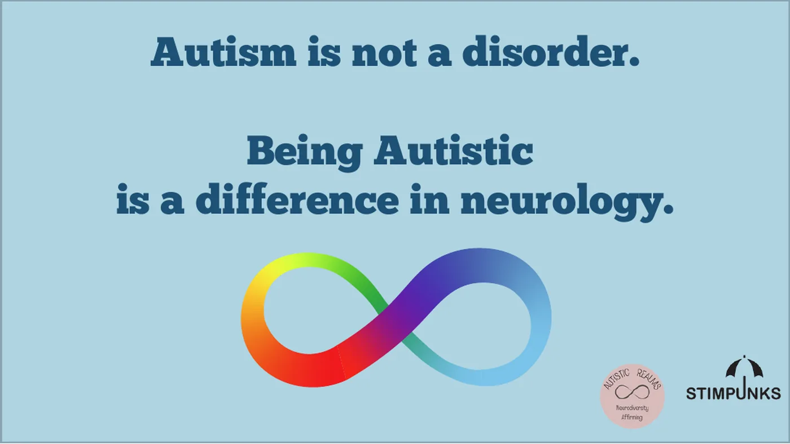
Being Autistic is a difference in neurology.
After decades of being described from the outside by outsiders, Autistic people developed the theory of monotropism to describe us from the inside. The autism pathway has always been defined by outsiders imposing a deficit lens upon us, pathologising our ways of being.
The Map of Monotropic Experiences rejects that path. Our map was created by and for Autistic people so that we can follow our authentic routes and ways. With the map, we can navigate our true desire lines.
Learning objectives
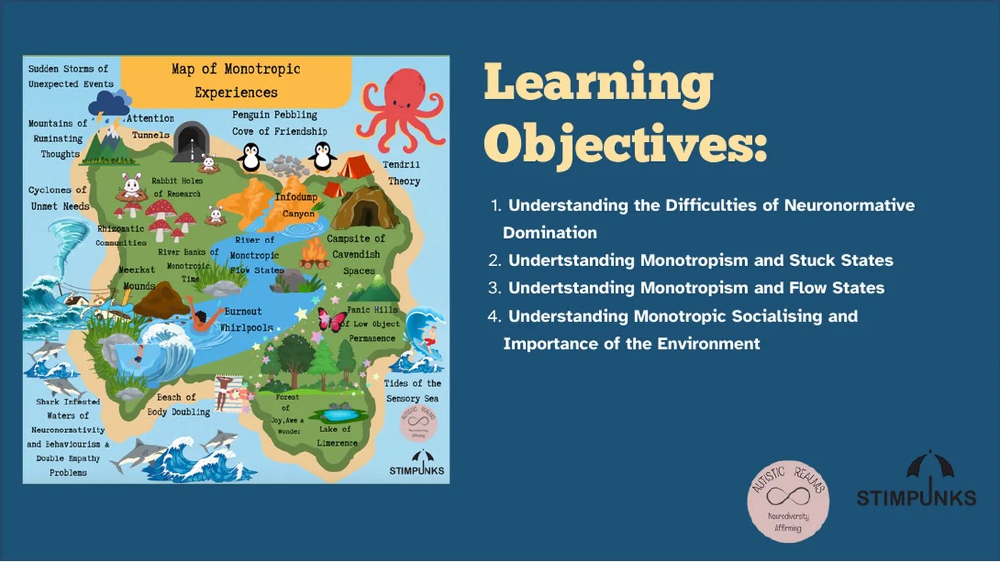
- Understanding the difficulties of neuronormative domination.
- Understanding monotropism and stuck states.
- Understanding monotropism and flow states.
- Understanding monotropic socialising and the importance of the environment.
Embracing the neurodiversity paradigm
![Three panels comparing models. Medical Model: fix or cure the person, try to change the person so they fit into society’s norms and expectations. Social Model: adapt the environment to meet needs, change society’s attitude and policy so everyone is included. Neurodiversity Paradigm: rejects the medical model and embraces the idea that everyone is unique and has different needs; there is no normal way of being; neurodivergence is part of the celebration of a naturally diverse society; striving for equity.](images/slides/neurodiversity-paradigm.webp)
The medical model focuses on fixing or curing the person: changing them so they fit society's norms and expectations.
The social model aims to adapt the environment to meet needs, and to change society's attitudes and policy so that everyone is included.
The neurodiversity paradigm rejects the medical model and embraces the idea that everyone is unique and has different needs. There is no normal way of being. Neurodivergence is part of the celebration of a naturally diverse society. It strives for equity.
We need to move away from deficit-based views of Autism and instead embrace neuro-affirming theories led by Autistic people, such as the theory of monotropism. By embracing neurodiversity, validating the lived experiences of Autistic people, and listening to stories shared in community spaces, we can create an ecology of care and equity that supports everyone, so we all have a chance to thrive.
Autism and the Map of Neuronormative Domination
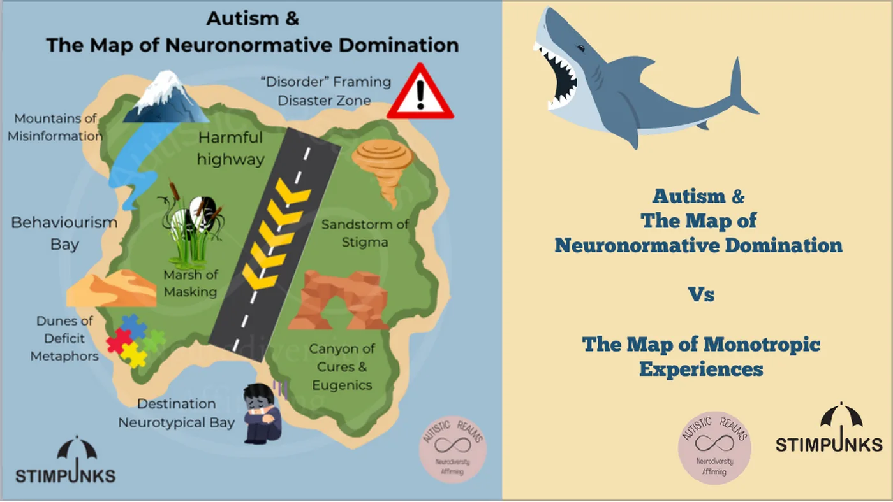
We created Autism & The Map of Neuronormative Domination to help frame the Map of Monotropic Experiences.
Historically, autism research has been carried out primarily by non-Autistic people with the goal of fixing or curing us. Vast quantities of money have been invested into eugenics and "cures", trying to make Autistic people more "normal" so they can fit into society — instead of thinking about how we can change society's values and the environment people live in. It has been a one-way track, a Harmful Highway, with the aim of getting to Destination Neurotypical Bay.
People generally think it is easier, and that Capitalist society will run more smoothly, if everyone fits into certain expectations, follows the norms, and just gets on with the rules set up by the neuromajority. This has left many neurodivergent, Disabled and other marginalised groups at the edges, stuck in the liminal zones, feeling unsupported, with hurdle after hurdle to climb over and battle after battle just to survive. Increasing numbers of children are left with no access to education — eroded like sea glass by the tides sweeping around Behaviourism Bay, blinded by the Sandstorms of Stigma and Mountains of Misinformation, and left feeling helpless and lost by the Dunes of Deficit Metaphors that engulf "Autism".
The Marsh of Masking covers most of the landscape. Masking is a survival mechanism of suppressed needs that so many Autistic people feel they have to perform just to get through their days. Not having enough safe spaces or safe people around you to enable you to be your authentic self has severe consequences for mental health and wellbeing, and can lead to burnout.
Society is rich and beautiful with limitless potential, but it is currently dominated by values entrenched in neuronormativity. Progress is restricted, and it feels like everyone who doesn't fit in is being cast further away, towards the edges. Things need to change, and we need to embrace neurodiversity.
Let's embrace the neurodiversity paradigm shift
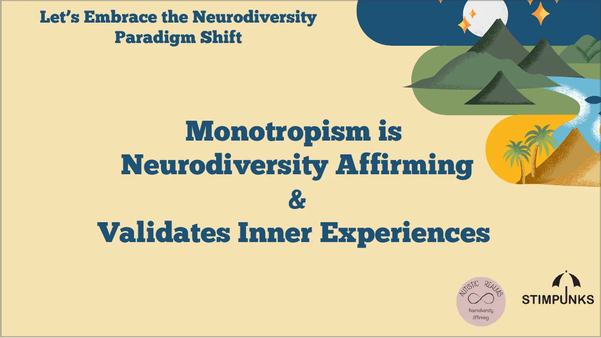
Monotropism is neurodiversity affirming, and it validates inner experiences.
The theory of monotropism is different to the historical research about Autism that persists and is still prevalent in the Diagnostic and Statistical Manual of Mental Disorders, which is used to diagnose Autism.
The theory of monotropism was developed by Autistic people — firstly Dinah Murray and Wenn Lawson in the late 1990s. This evolved into the research paper Attention, monotropism and the diagnostic criteria for autism, published in 2005.
The Monotropism Questionnaire (MQ) was published in 2023 and was developed by an Autistic-led research team: Valeria Garau, Aja Louise Murray, Richard Woods, Nick Chown, Sonny Hallett, Fergus Murray, Rebecca Wood and Sue Fletcher-Watson.
The questionnaire identifies eight factors associated with monotropic thinking: managing social situations; rumination and anxiety; struggle with decision-making; the anxiety-reducing effect of special interests; need for routines; special interests; losing track of other factors when focusing on special interests; and environmental impact on the attention tunnel.
The study involved 1,110 participants — 756 Autistic and 354 non-autistic. Autistic people scored significantly higher on the MQ, indicating a stronger presence of monotropic traits. People who are both Autistic and ADHD (AuDHD) had the highest monotropism scores, followed by Autistic-only and then ADHD-only groups.
The theory of monotropism and the Monotropism Questionnaire are resonating with millions of people, and have exploded across social media in the past few years as more and more people identify and relate to it.
There are many positive aspects of monotropism — enhanced attention to detail, deep knowledge acquisition, immersive sensory experiences, and the ability to enter flow states, which can be regulating. The theory also acknowledges and validates the challenges many Autistic people experience, including difficulties in shifting attention and managing multiple demands.
You can find out your own score at monotropism.org.
What is monotropism?
![A slide titled "What is Monotropism?" carrying the community definition: monotropism is a neurodiversity affirming theory of autism (Murray et al 2005); Autistic, ADHD and AuDHD people are more likely to be monotropic (Garau et al., 2023); monotropic people have an interest based nervous system, focusing more attention resources on fewer things at any one time than people who may be polytropic; things outside an attention tunnel may get missed and moving between attention tunnels can be difficult and take a lot of energy. A note credits community input gathered across social media in January 2024.](images/slides/what-is-monotropism.webp)
Fergus Murray maintains monotropism.org and is a published monotropic writer and science teacher. They explain the theory this way:
Monotropic minds tend to have their attention pulled more strongly towards a smaller number of interests at any given time, leaving fewer resources for other processes. We argue that this can explain nearly all of the features commonly associated with autism, directly or indirectly. However, you do not need to accept it as a general theory of autism in order for it to be a useful description of common autistic experiences and how to work with them.
If we are right, then monotropism is one of the key ideas required for making sense of autism, along with the double empathy problem and neurodiversity. Monotropism makes sense of many autistic experiences at the individual level. The double empathy problem explains the misunderstandings that occur between people who process the world differently, often mistaken for a lack of empathy on the autistic side. Neurodiversity describes the place of autistic people and other 'neurominorities' in society.
Fergus Murray, monotropism.org
The key difference compared to many other accounts of Autism is that the researchers were themselves Autistic, and could offer their inner experiences to shape and form a new, more affirming theory — one that didn't pathologise or stigmatise Autistic people further, and instead celebrated the positives while also recognising the difficulties that can occur.
The community definition
Helen Edgar harvested community thoughts about monotropism across social media in January 2024 and created this community definition:
Monotropism is a neurodiversity-affirming theory of Autistic experiences. The research by Garau et al (2023) showed that Autistic /ADHD/ AuDHD people were more likely to have higher scores in their monotropism questionnaire than any other group of people. Monotropic people have an interest-based nervous system. This means that they focus more of their attention resources on fewer things at any one time, compared to other people who may be polytropic.
Things outside a monotropic person's attention tunnel may get missed, and they may find moving between attention tunnels difficult and feel that this takes a lot of energy, but where monotropic people's attention is directed, results in a deep and enriching experience.
Monotropism can have a positive and negative impact on the sensory, social and communication needs of people depending on their environment, the support provided and how a person manages their mind and body.
Helen Edgar, Autistic Realms
Intersectionality and the Double Empathy Problem
![A slide titled "Intersectionality & The Double Empathy Problem". On the left, the Wheel of Power and Privilege by Sylvia Duckworth, a coloured wheel with "power" at the centre and "marginalized" at the rim, segmented by skin colour, citizenship, formal education, ability, sexuality, mental health, body size, housing, wealth, language and gender. On the right, a note that Kimberlé Crenshaw is a Black feminist legal scholar who first coined the term intersectionality in her essays of 1989 and 1991.](images/slides/intersectionality.webp)
Kimberlé Crenshaw is a Black feminist legal scholar. She first coined the term intersectionality in her essays of 1989 and 1991.
Our experiences are shaped by our environment, our past and our identities. Each person will have a unique map, influenced by the wheel of power and privilege.
Intersectionality and the Double Empathy Problem both deepen our understanding of monotropism and Autistic experience, by highlighting how multiple, overlapping identities and relational dynamics shape our lived realities.
Intense focus, deep interest tunnels, and difficulties with switching attention are not experienced in isolation. They are shaped by additional factors like race, gender, class, disability and cultural context. A Black Autistic woman may face compounded misunderstandings or barriers in expressing and receiving support for her monotropic attention style, due to systemic racism and gendered expectations.
Intersectionality's raison d'être is to reveal the systems that organise our society. Intersectionality's brilliance is that its fundamental contribution to how we view the world seems so common-sense once you have heard it: by focusing on the parts of the system that are most complex and where the people living it are the most vulnerable, we understand the system best.
Tressie McMillan Cottom
The 'double empathy problem' refers to the mutual incomprehension that occurs between people of different dispositional outlooks and personal conceptual understandings when attempts are made to communicate meaning.
Damian Milton, 2012
The areas of the map
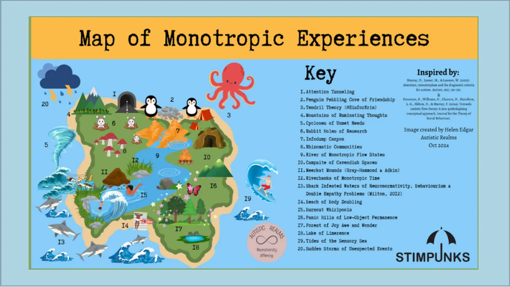
The Map of Monotropic Experiences has twenty areas. Each one has a page of its own here, crediting the person who named it.
You can focus on specific areas in your presentation, depending on the needs of your group. We have left this open for you to adapt and to open up discussion.
Difficulties of neuronormative domination
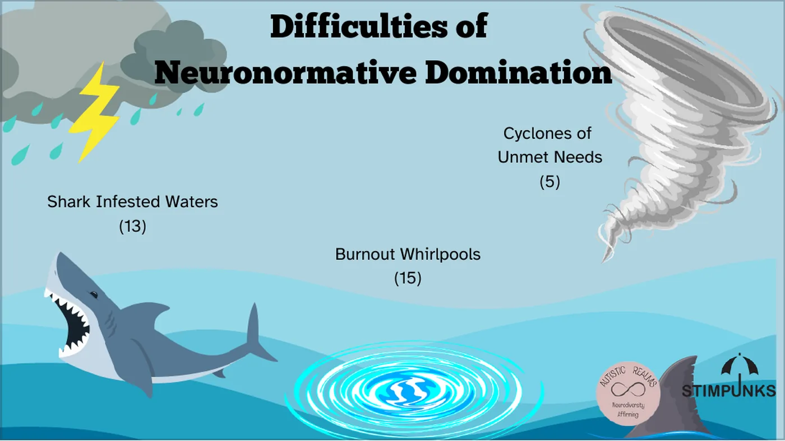
Shark Infested Waters (13) · Burnout Whirlpools (15) · Cyclones of Unmet Needs (5)
Outdated and inaccurate research influenced by non-Autistic perspectives has had harmful consequences for Autistic people. Viewing Autism through a deficit lens has led to a denial of autonomy and human rights, as Autistic people are perceived as abnormal and in need of correction.
This is reflected by the Shark Infested Waters of neuronormativity on the map. This water permeates all of society and seeps through the cracks, so people may not even notice its harm — yet it seeps through and affects families, relationships, work, education, health and social care settings. It reinforces the need for Autistic people to suppress their authentic identity and mask, which is detrimental to our wellbeing.
- Shark Infested Waters — Neuronormativity is a set of norms, standards, expectations and ideals that centre a particular way of functioning as the right way to function. It is the assumption that there is a correct way to exist in this world; a correct way to think, feel, communicate, play, behave and more. (Sonny Jane Wise)
- Burnout Whirlpools — Autistic burnout is a state of physical and mental fatigue, heightened stress, and diminished capacity to manage life skills, sensory input, and/or social interactions, which comes from years of being severely overtaxed by the strain of trying to live up to demands that are out of sync with our needs. (Raymaker, 2020)
- Cyclones of Unmet Needs — Mismatch between the areas we actually receive support, compared to the areas we would ideally like support.
Monotropism: stuck states
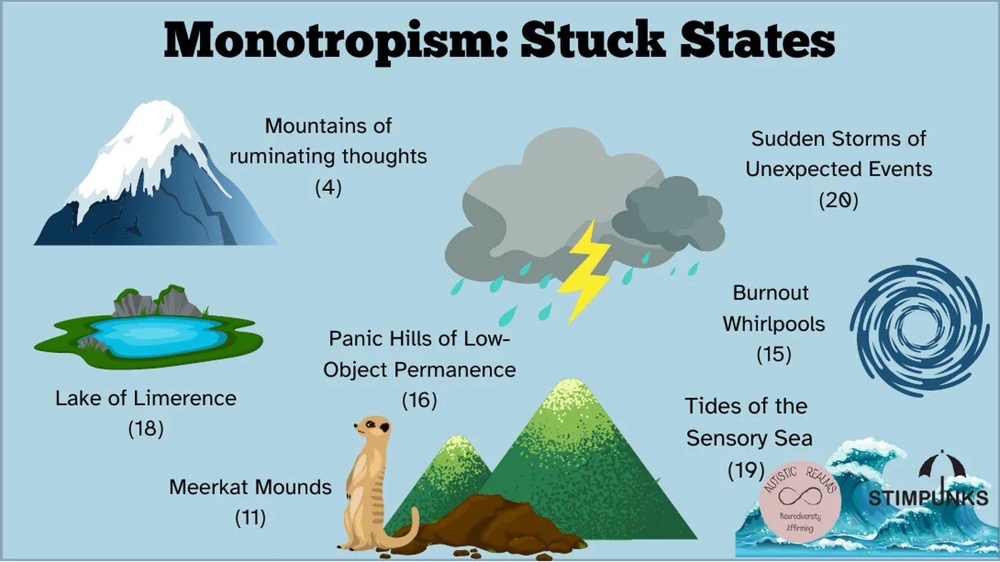
Mountains of Ruminating Thoughts (4) · Meerkat Mounds (11) · Burnout Whirlpools (15) · Panic Hills of Low Object Permanence (16) · Lake of Limerence (18) · Tides of the Sensory Sea (19) · Sudden Storms of Unexpected Events (20)
Being a monotropic person in a world designed for the benefit of the majority of polytropic people is exhausting. If you can't access safe spaces, engage in your interests and feel connected, then you are more likely to enter a stuck state.
If you are in a stuck state, it will affect your wellbeing. A stuck state affects everything, from how you experience and are able to understand and interpret your sensory needs — including interoception — to how well you can function and live the life you want. Stuck states are states of inertia: unable to start, or unable to stop. You may feel trapped in a constant loop of ruminating thoughts.
- Rumination — When your thoughts are all swirly and you just keep chewing on the same thought over and over and you can't stop thinking about it and it's distracting you and sometimes even putting you in a really bad mood or making you irritable. (Chipura)
- Unexpected Events — If an autistic person is pulled out of monotropic flow too quickly, it causes our sensory systems to dysregulate. This in turn triggers us into emotional dysregulation, and we quickly find ourselves in a state ranging from uncomfortable, to grumpy, to angry, or even triggered into a meltdown or a shutdown. (Rose)
- Limerence — Limerence is a state of involuntary obsession with another person. The experience of limerence is different from love or lust in that it is based on the uncertainty that the person you desire also desires you. (Psychology Today)
- Object Permanence — Autistic children have difficulties with their understanding of: what's here, what's now, what is permanent, and so on. (Lawson)
- Burnout — Autistic burnout is a state of physical and mental fatigue, heightened stress, and diminished capacity to manage life skills, sensory input, and/or social interactions. (Raymaker)
- Meerkat Mode — Heightened state of vigilance and arousal that involves constantly looking for danger and threat. It is more than hyper-arousal, it is an overwhelmed monotropic person desperately looking for a hook into a monotropic flow-state. (Adkin)
- Sensory Experiences — Neurodivergent people are hypersensitive to mindset and environment due to a greater number of neuronal connections. They have both a higher risk for trauma and a large capacity for sensing safety. (Elisabeth)
Monotropism: flow states
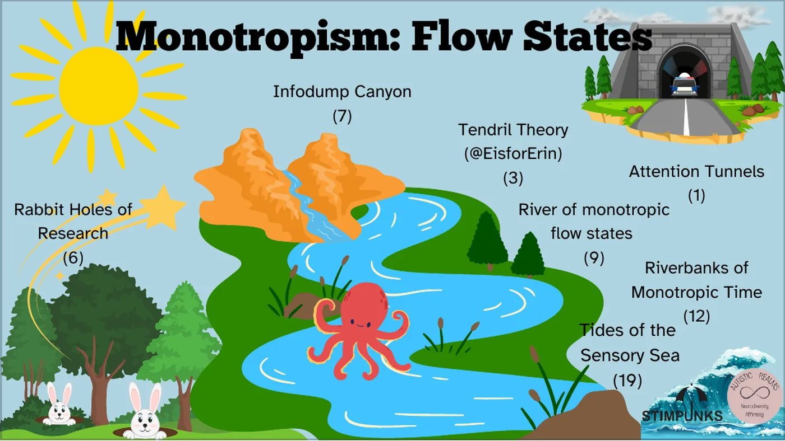
Attention Tunnels (1) · Tendril Theory (3) · Rabbit Holes of Research (6) · Infodump Canyon (7) · River of Monotropic Flow States (9) · Riverbanks of Monotropic Time (12) · Tides of the Sensory Sea (19)
Monotropism is a neuro-affirming theory of Autism. Everyone benefits from flow states, but for Autistic people flow is even more important.
Everyone has a certain amount of energy and capacity to get through their days. For monotropic people, energy and attention resources are focused on fewer things at any one time, and flow states are essential to help you get through the day and balance your mind and body. Being engaged in a flow state, if you are monotropic, can feel like your energy is being restored.
- Infodumping — Talking a lot about a topic in great detail.
- Tendril Theory — When I'm focused on something, my mind sends out a million tendrils of thought, expands into all of the thoughts & feelings. When I need to switch tasks, I must retract all of the tendrils of my mind. This takes some time. (@EisforErin)
- Attention Tunnels — Entering flow states, or attention tunnels, is a necessary coping strategy for many of us. Flow states are the pinnacle of intrinsic motivation. (Murray)
- Rabbit Hole — "Down the rabbit hole" is an English-language idiom or trope which refers to getting deep into something, or ending up somewhere strange.
- Flow States — Entering flow states, or attention tunnels, is a necessary coping strategy for many of us. (Fergus Murray)
- Monotropic Time — When absorbed in our special interests or passions it can feel like entering a portal. Normal time can feel like it is dissolving, the outside world may feel like it is melting away. This can be really rejuvenating for the sensory system and help to recharge the bodymind. (Helen Edgar)
Monotropic socialising and the importance of environment
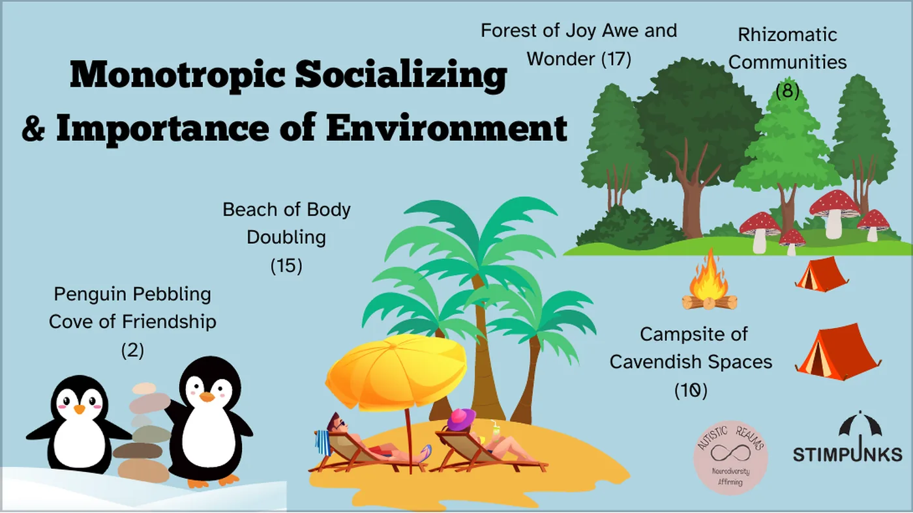
Penguin Pebbling Cove of Friendship (2) · Rhizomatic Communities (8) · Campsite of Cavendish Spaces (10) · Beach of Body Doubling (14) · Forest of Joy, Awe and Wonder (17)
Making changes to the environment in schools, workplaces and other settings — and providing opportunities that honour the authentic ways Autistic people communicate, along with adaptations to meet sensory needs — will benefit everyone.
Embracing neurodiversity means embracing and validating the lived experience of everyone, including Autistic, ADHD and other marginalised people. Enabling flow states and providing an environment where everyone's wellbeing is supported will help whole communities to thrive. We need to listen to Autistic and ADHD people, and create a sense of pride around monotropic experiences.
- Autistic Joy — Autistic joy is one of our favourite things about being autistic. It can be intense as a meltdown, but filled with overwhelming happiness and excitement. When we experience joy, we feel the excited vibrations throughout our bodies. To release the energy, we do a "happy stim." We will jump up and down, excitedly flap our hands, sometimes even dance. (Amelia Blackwater)
- Autistic Rhizome — A growing and evolving network of Autistic communities with no hierarchy or dependence on another's existence. (Edgar)
- Body Doubling — A "body double" is a person or even a pet who is present with us while we work. This provides a gentle form of accountability — their presence serves as a reminder of what we're supposed to be doing, so we're less likely to get distracted. (McCabe)
- Cavendish Space — Psychologically and sensory safe spaces suited to zone work, flow states, intermittent collaboration, and collaborative niche construction. (Boren)
- Penguin Pebbling — "Penguin pebbling" is a little exchange between two people to show that they care and want to build a meaningful connection. (Edgar)
Further ideas for using the map
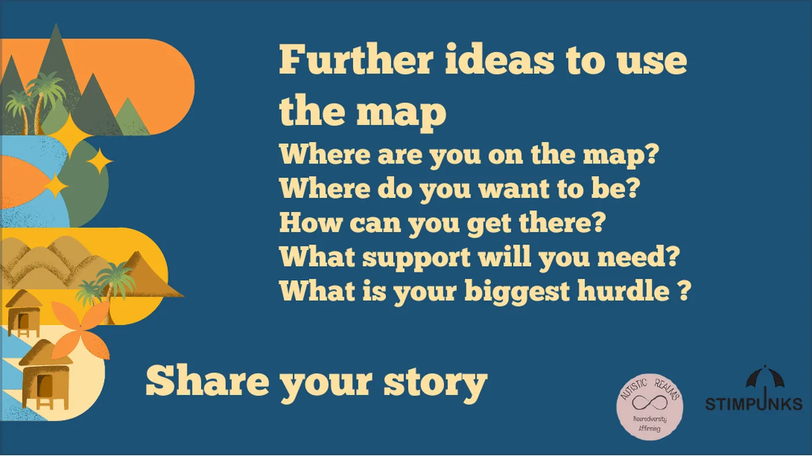
- Where are you on the map?
- Where do you want to be?
- How can you get there?
- What support will you need?
- What is your biggest hurdle?
This is an open invitation to share your stories, together or with us.
You could create a collage or painting of your own maps, as a group or an individual activity, and share and discuss the similarities and differences. Celebrate the unique qualities of everyone's individual maps.
Share your story — and see Your map for more prompts.
Questions
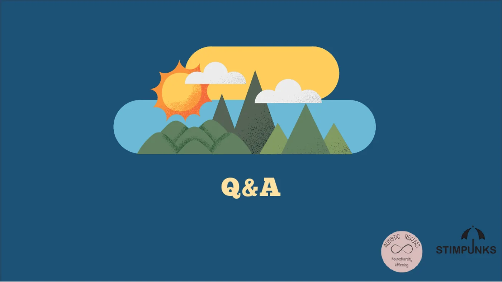
Leave open space for questions and discussion. Please visit Autistic Realms and Stimpunks for ideas and signposting resources.
Find out more
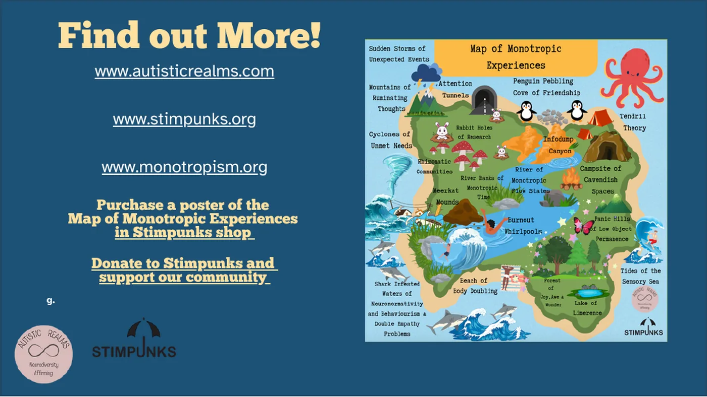
- autisticrealms.com
- stimpunks.org
- monotropism.org
- Purchase a poster of the Map of Monotropic Experiences in the Stimpunks shop.
- The training pack and the workbook at Autistic Realms — free for individuals and anyone with limited funds, with a suggested donation for organisations and professionals.
- Donate to Stimpunks and support our community.
Thank you for showing an interest in our training. We hope you have found this valuable. Please do share your feedback with us — we'd love to hear from you.
References
- Murray, D., Lesser, M., & Lawson, W. (2005). Attention, monotropism and the diagnostic criteria for autism. Autism, 9(2), 139–156. doi.org/10.1177/1362361305051398
- Garau, V., Murray, A. L., Woods, R., Chown, N., Hallett, S., Murray, F., Wood, R. & Fletcher-Watson, S. (2023). Development and Validation of a Novel Self-Report Measure of Monotropism in Autistic and Non-Autistic People: The Monotropism Questionnaire. osf.io/ft73y
- Edgar, H. (2023). Monotropism Questionnaire & Inner Autistic/ADHD Experiences. Autistic Realms
- Crenshaw, K. W. (1991). Mapping the Margins: Intersectionality, Identity Politics, and Violence against Women of Color. Stanford Law Review, 43(6), 1241. doi.org/10.2307/1229039
- Milton, D. E. (2012). On the ontological status of autism: the 'double empathy problem.' Disability & Society, 27(6), 883–887. doi.org/10.1080/09687599.2012.710008
- Raymaker, D. M., Teo, A. R., Steckler, N. A., Lentz, B., Scharer, M., Santos, A. D., Kapp, S. K., Hunter, M., Joyce, A., & Nicolaidis, C. (2020). "Having All of Your Internal Resources Exhausted Beyond Measure and Being Left with No Clean-Up Crew": Defining Autistic Burnout. Autism in Adulthood, 2(2), 132–143. doi.org/10.1089/aut.2019.0079
- Wise, S. J. (2023). Introducing decentering neuronormativity. LinkedIn
- Cottom, T. M. (2018). The Intersectional Presidency. Medium
All the map's links are collected on the original article.